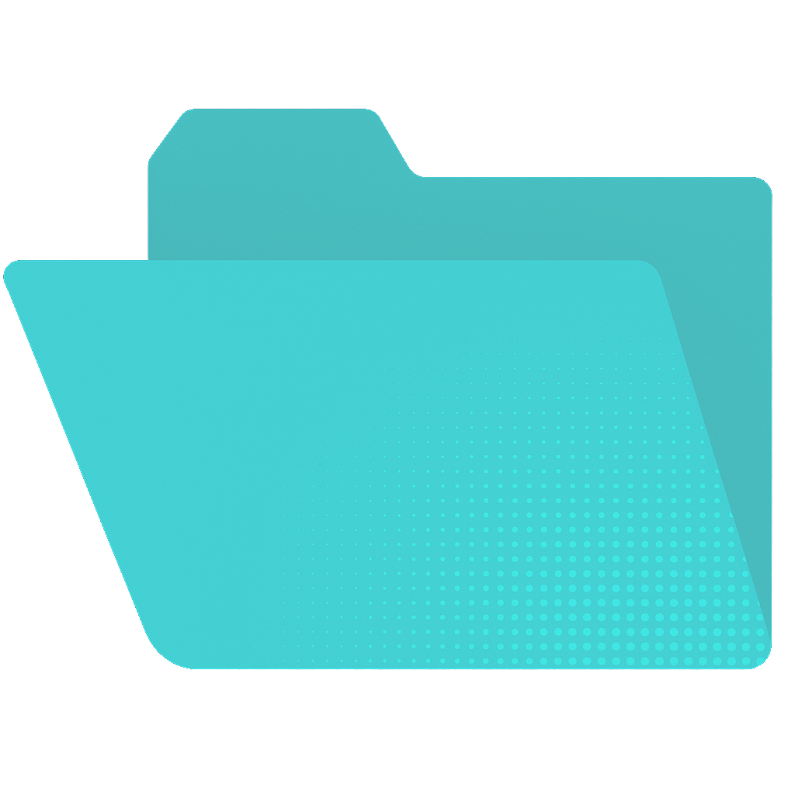

Learning


Grupo Matrícula de Honor
En la asignatura de Entornos de Comunicación Virtual, se han realizado varios proyectos utilizando diversas tecnologías:
1. Entornos de comunicación virtual - Lab1:
• Se desarrolló un chat utilizando HTML, CSS y JavaScript. Los usuarios pueden unirse a una sala de chat conectada a Sillyserver para enviar mensajes a todos los usuarios en la sala, o seleccionar usuarios específicos para enviar mensajes privados.
2. DaNau’s Virtual Chat - Lab2:
• Se desarrolló una aplicación de chat 2D utilizando HTML, CSS, JavaScript y bases de datos SQL. Los usuarios pueden unirse a una sala de chat virtual creada por Canvas, que está conectada a nuestro servidor personalizado, para enviar mensajes a todos los usuarios en el entorno compartido e interactuar con sus avatares dentro del espacio virtual.
3. DaNau’s Virtual Classroom - Lab3:
• Se desarrolló un entorno de comunicación 3D utilizando HTML, CSS, JavaScript y bases de datos SQL. Los usuarios pueden unirse a un aula virtual 3D, que está conectada a nuestro servidor personalizado, donde los estudiantes y los profesores pueden interactuar de varias maneras: pueden enviar mensajes, hablar, realizar actividades e interactuar con los personajes de otros estudiantes y profesores dentro del Aula Virtual 3D.
En la asignatura de Taller de Tecnología Musical, se realizó un proyecto en equipo llamado "AnimalIA" utilizando varias herramientas y técnicas de procesamiento de audio:
1. Herramientas utilizadas:
• Se utilizó Essentia para el análisis de audio, PyCharm como entorno de desarrollo integrado (IDE) para la programación en Python, y Streamlit para crear rápidamente aplicaciones web para nuestros proyectos.
2. Extracción de características de audio:
• Se aplicaron técnicas de extracción de características en audios utilizando Essentia. Esto permitió obtener información relevante de los archivos de audio que luego se puede utilizar para diversas aplicaciones, como la clasificación de sonidos o la detección de eventos sonoros.
3. Procesamiento a través de Machine Learning:
• Se utilizaron técnicas de Machine Learning (scikit) para procesar las características extraídas de los audios. Esto permitió crear modelos que pueden aprender de los datos y hacer predicciones o decisiones.
4. Integración Backend-Frontend en tiempo real:
• Se logró una integración Backend-Frontend en tiempo real. Desde la aplicación web, se pueden grabar sonidos y, a continuación, a este sonido se le extraen las características utilizando Essentia, para posteriormente clasificarlo con los modelos de Machine Learning que se han entrenado.
En la asignatura de Sistemas Interactivos, se realizó un proyecto en equipo llamado "HouseDreaming" utilizando C# y Unity:
1. Descripción del proyecto:
• "HouseDreaming" es una experiencia interactiva de cuerpo completo en la que te encuentras dentro de una casa vacía lista para ser amueblada. Esta casa es tu casa de ensueño y debes memorizar una visión de cómo quieres que sea.
2. Funcionamiento del juego:
• Al entrar, se proyecta una visión en tu mente mostrando cada mueble en su lugar perfecto durante 20 segundos. Luego, debes colocar los muebles en los lugares que recuerdas de la visión para ganar puntos.
3. Progreso del juego:
• El juego continúa con más entregas de muebles y decisiones sobre dónde colocarlos. A medida que avanzas, los muebles se vuelven más complejos y la casa se llena más, aumentando el desafío.
4. Objetivo final:
• El objetivo final de "HouseDreaming" es completar tu casa de ensueño tal como la imaginaste, utilizando tu cuerpo y mente en todo momento para lograr tu objetivo.
En la asignatura de Análisis de Gestos y Caras, se realizaron varios proyectos en equipo utilizando MATLAB y Python:
1. Lab1 - Detección automática de caras:
• El objetivo era producir un sistema automático de detección de caras que devuelva el cuadro delimitador de todas las caras presentes en una imagen o un array vacío si no hay caras.
2. Lab2 - Extracción de bases faciales representativas:
• El objetivo era extraer bases faciales representativas de imágenes faciales y puntos de referencia faciales, siguiendo el algoritmo de eigenfaces.
3. Lab3 - Percepción subjetiva de emociones:
• El objetivo era encontrar experimentalmente la estructura de la percepción subjetiva de emociones a partir de expresiones faciales, utilizando un conjunto de datos con 24 imágenes representando 8 emociones prototípicas.
4. Lab4 - Reconocimiento automático de caras:
• El objetivo era producir un sistema automático de reconocimiento de caras que determine si algún usuario especificado en la base de datos de entrenamiento está presente en la imagen y, de ser así, devolver su identidad.
5. Challenge Lab5 - Mejora y optimización del Lab4:
• El objetivo era mejorar y optimizar el sistema de reconocimiento de caras desarrollado en el anterior laboratorio, obteniendo una versión final con el mejor rendimiento posible.
En la asignatura de Seguridad en Computadores, se realizaron varios proyectos en equipo utilizando diversas herramientas y técnicas:
1. Lab1 - Footprinting y Reconocimiento:
• El objetivo era aprender las técnicas para identificar proactivamente vulnerabilidades en nuestras redes y sistemas antes que los actores maliciosos.
2. Lab2 - Vulnerabilidades de Sistemas:
• El objetivo era utilizar Kali para realizar escaneos activos en una máquina virtual Metasploitable usando NMAP, identificando y explotando vulnerabilidades para entender mejor los riesgos de seguridad del sistema.
3. Lab3 - Monitoreo de actividades de escaneo de internet:
• El objetivo era explorar el monitoreo de actividades con herramientas como Shodan, GreyNoise, VirusTotal y CriminalIP, y analizar las implicaciones de un entorno cibernético donde las actividades maliciosas son prevalentes y en constante evolución.
4. Lab4 - Malware Hacking:
• El objetivo era entender el funcionamiento de los RATs (Remote Administration Tools) y desarrollar estrategias para neutralizar sus efectos perjudiciales, destacando la importancia de los controles y protocolos de seguridad rigurosos y regulares.
5. Lab5 - Ejecución de Defensa y Ataque:
• Se implementaron medidas de prevención y monitoreo de la red utilizando tecnologías como WAZUH, HoneyPot, Windows Server 2012, CanaryTokens y Metasploitable v3. Se realizaron escaneos horizontales y verticales de puertos, y se llevaron a cabo ataques de fuerza bruta y exploits para evaluar la seguridad del sistema.
En la asignatura de Aplicaciones Inteligentes para la Web, se realizaron varios proyectos en equipo utilizando diversas herramientas y técnicas:
1. Seminar1 - Introducción a la clasificación de texto:
• Se realizaron tres experimentos de clasificación: el primer experimento con el dataset IRIS utilizando árboles de decisión, el segundo con el dataset IMDB utilizando Naïve Bayes, y el tercero con el dataset Reuters utilizando Naïve Bayes y otros clasificadores.
2. Seminar2 - Análisis de texto y características lingüísticas:
• Se realizaron análisis de texto, cálculo de N-Grams, análisis de características lingüísticas utilizando spaCy, y análisis de embeddings de palabras utilizando word2vec, GloVe y FastText.
3. Seminar3 - Redes Neuronales:
• Se introdujo el uso de arquitecturas de redes neuronales para la clasificación binaria de texto, incluyendo la preparación de datos, la configuración de la red neuronal y la evaluación del rendimiento del modelo.
4. Lab1 - Resumen de texto:
• Se exploraron métodos de resumen de texto, tanto extractivos como abstractive, utilizando redes neuronales para aprender a puntuar oraciones basadas en una serie de características de relevancia.
5. Lab2 - Extracción de información entrenable con BERT:
• Se implementó un sistema de extracción de información basado en BERT para un dominio de texto específico, utilizando convenciones de etiquetado BIO y evaluando el rendimiento con métricas de precisión, recall y F1.
En la asignatura de Redes de Sensores Inalámbricos, se llevaron a cabo diversos proyectos prácticos que involucraron el uso de tecnologías y plataformas avanzadas para la implementación y gestión de redes de sensores:
1. Lab1 - Introducción a Arduino, Sensores y Actuadores:
• Familiarización con el entorno de desarrollo de Arduino y la programación básica de sensores y actuadores.
2. Lab2 - Uso de Arduino UNO y ESP-32:
• Exploración de las funcionalidades y diferencias entre Arduino UNO y ESP-32 para proyectos de sensores.
3. Lab3 - Programación con Contiki-NG:
• Implementación de programas en Contiki-NG y creación de aplicaciones de comunicación entre dispositivos.
4. Lab4 - Middleware con Node-Red:
• Node-Red para integración y gestión de datos de sensores en una plataforma middleware.
5. Lab5 - Dashboards y Plataformas de Análisis IoT:
• Creación de dashboards y visualización de datos en tiempo real utilizando Node-Red y plataformas de análisis IoT como Thingspeak.
6. Proyecto Final - Monitorización Meteorológica:
• Desarrollo de una red de sensores inalámbricos para el monitoraje meteorológico utilizando dispositivos Arduino y Zolertia, con transmisión de datos a través del protocolo 802.15.4 y visualización en tiempo real mediante Node-RED.
En la asignatura de Ingeniería de Software para Aplicaciones Web, se llevaron a cabo diversos proyectos prácticos que involucraron el uso de tecnologías y plataformas avanzadas para la implementación y gestión de aplicaciones web:
1. Proyecto Final - Animaler Freedom:
• Se desarrolló una aplicación web llamada Animaler Freedom, red social de tipo Twitter, pero enfocándola a los amantes de los animales. La aplicación permite a los usuarios enviar tweets, seguir a otros usuarios y gestionar sus perfiles. Los usuarios pueden publicar tweets, subir imágenes, editar y borrar sus publicaciones, dar like o dislike, y cambiar su foto de perfil y nickname. También pueden ver los tweets globales y los de las personas que siguen, así como los perfiles de otros usuarios.
2. Tecnologías Utilizadas:
• Desarrollo utilizando HTML, CSS, Node.js, MySQL, Servlets y Eclipse IDE para la implementación y gestión de la aplicación.
3. Patrones de Diseño:
• Uso del patrón Modelo-Vista-Controlador (MVC) para organizar y estructurar la aplicación.
4. Perfiles de Usuario:
• Definición de diferentes tipos de usuarios: no registrados, registrados y administradores, cada uno con diferentes funcionalidades y permisos.
En la asignatura de Gestión de Proyectos, se desarrolló un chatbot funcional para INCASÒL utilizando las tecnologías proporcionadas por HubType. Este chatbot proporciona asistencia eficiente a los clientes, respondiendo instantáneamente a sus consultas.
1. Proyecto Final - The Wild Incabot:
• Implementación chatbot especializado para mejorar la calidad del servicio al cliente de INCASÒL.
2. Tecnologías Utilizadas en el Desarrollo:
• Uso de HTML, CSS y JavaScript Extended para la implementación y gestión del chatbot.
3. Funcionalidades del Chatbot:
• Responder a preguntas frecuentes y específicas de los usuarios, reducir el volumen de llamadas y mejorar la eficiencia del servicio al cliente.
4. Técnicas Utilizadas:
• Uso de técnicas de tokenización y navegación dentro del chatbot para responder preguntas de manera precisa, utilizando una base de datos con la información necesaria.
5. Metodología Agile:
• Aplicación de la metodología Agile, siguiendo un seguimiento en 5 fases: inicialización, planeamiento, ejecución, finalización, y monitoreo y control, todas ellas documentadas profesionalmente siguiendo las directrices pertinentes.
6. Evaluación del Proyecto:
• El chatbot ha logrado tiempos de respuesta promedio por debajo de 1 segundo y ha resuelto efectivamente el 100% de las preguntas proporcionadas por INCASÒL.
En la asignatura de Inteligencia Artificial, se realizaron varios proyectos prácticos utilizando Berkeley Pacman para familiarizarse con diferentes técnicas de búsqueda y aprendizaje.
1. Lab Project 1 - Pacman Search:
• Familiarización con la búsqueda de un solo agente y la derivación de heurísticas, que implicaba implementar algoritmos de búsqueda como BFS, DFS, UCS y A* para que Pacman encontrara su camino en el laberinto.
2. Lab Project 2 - Adversarial Search:
• Exploración de la búsqueda adversarial multi-agente, implementando algoritmos como Minimax y Alpha-Beta Pruning para que Pacman pudiera tomar decisiones óptimas en presencia de fantasmas adversarios.
3. Lab Project 3 - Reinforcement Learning:
• Introducción al aprendizaje por refuerzo, implementando algoritmos de aprendizaje por refuerzo como Q-learning y SARSA para que Pacman aprendiera a navegar el laberinto a través de la experiencia y la retroalimentación.
4. Final Lab Project - Pacman Contest:
• Participación en un concurso UPF de Pacman multijugador tipo captura la bandera, desarrollando agentes que controlaban tanto a Pacman como a los fantasmas en estrategias coordinadas por equipos.
Matrícula de Honor
En la asignatura de Internet of Things, se realizaron laboratorios para familiarizarse con el ESP32 y desarrollar aplicaciones conectadas a la nube siguiendo un Caso de Uso:
1. Lab1 - Familiarización con ESP32:
• Configuración del entorno de desarrollo para ESP32 y ejecución del ejemplo "hello_world".
2. Lab2 - Ejemplos de Periféricos en ESP32-S2:
• Implementación tira LED, sensor táctil y sensor de temperatura utilizando ESP32.
3. Lab3/4 - Demo con Sensor de Temperatura:
• Desarrollo de una demo que activa un LED verde si la temperatura es inferior a 30ºC y un LED rojo si es igual o superior.
4. Lab5 - Conexión a la Nube IoT:
• Conexión del ESP32 a WiFi, elección de un servicio en la nube (como Arduino Cloud o Google Cloud IoT), envío de datos de telemetría y recepción de comandos de control.
5. Lab6 - Desarrollo de una Demo Completa:
• Desarrollo de una demo conectada a la nube para mostrar datos y recibir comandos, incluyendo un informe final detallado.
6. Proyecto Final - IoT-Enhanced Art and Museum Security:
• Implementación de un sistema de seguridad mejorado para museos utilizando IoT. Se utilizó una placa ESP32-S2 y varios sensores para monitorear la proximidad a las obras de arte, las condiciones ambientales, la densidad de personas y la ubicación de las piezas de arte. El sistema genera alertas visuales y sonoras, y transmite datos a la nube para su monitoreo en tiempo real a través del Arduino Cloud Dashboard.
Coursera Noviembre 2023
Tareas Realizadas:
• Coordinación y resolución efectiva de amenazas de seguridad.
• Uso de IDS, SIEM y Bash para monitorización y respuesta.
• Aplicación de principios de seguridad en desarrollo, redes y operaciones.
• Resolución de incidentes mediante el uso de playbooks y principios fundamentales de INFOSEC.
• Coordinación y resolución efectiva de amenazas de seguridad.
• Uso de IDS, SIEM y Bash para monitorización y respuesta.
• Aplicación de principios de seguridad y redes, con experiencia en la resolución de incidentes mediante Playbooks y fundamentos de INFOSEC.
Habilidades Adquiridas:
• Kali Linux y Bash.
• SIEM Tools e Intrusion Detection Systems (IDS).
• Arquitectura de redes.
• Security hardening y Criptografía.
• Escalation and Communication of Security Incidents.
• Information Security (INFOSEC) e Incident Response Playbooks.
• Security Domains.
• Programación Python.
• Gestión de amenazas y vulnerabilidades.